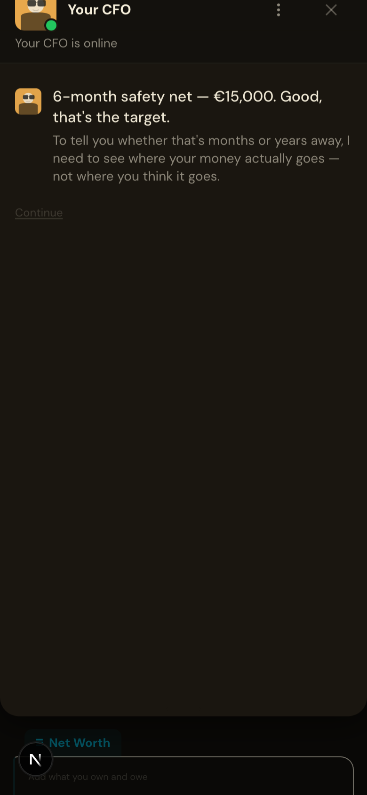
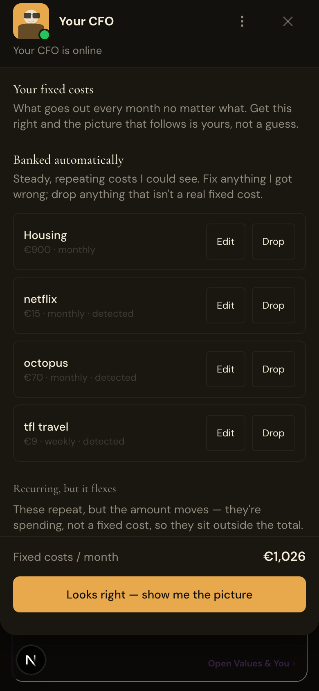
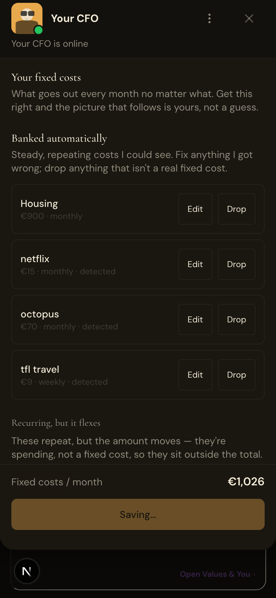
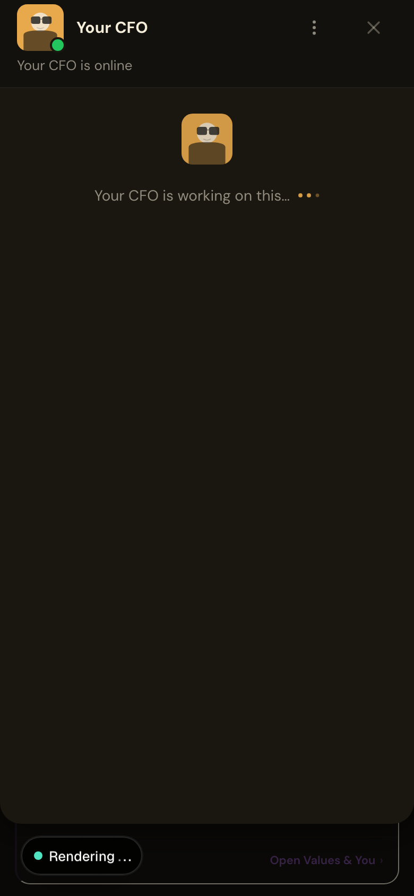

The Truth Teller — Balanced truth-teller-balanced
Functional: pass
LLM: pass
Visual: pass
67.8s
Screenshots





LLM judge
Hard rules
- [insight] R1_no_banned_words
- [insight] R1b_no_banned_patterns
- [insight] R7_no_system_note
- [insight] R6_no_goal_denial
- [insight] R5_currency_symbol
- [insight] R8_cta_vocabulary
- [insight] R3b_insight_mentions_one_of
- [insight] R4_numbers_match_csv
- [insight] H1_signoff_present — expected "— C." on its own final line
- [insight] H2_within_word_cap — 202/250 words
- [insight] H3_exactly_one_cta — 1 [CTA] block(s)
- [insight] H4_no_options_block — retired [OPTIONS] chip format must not appear
- [insight] H5_no_question_close — directing surplus toward the goal rather than away from it.
- [insight] H6_no_emoji
- [insight] H7_voice_no_banned
- [insight] R9_goal_reference
Likert means
| Dimension | Score (1-5) |
|---|---|
| warmth | 5.0 |
| accuracy | 5.0 |
| on_brand | 4.0 |
| persona_fit | 4.0 |
| actionability | 4.0 |
Per-dimension reasons
- [insight] warmth: 5/5 — Conversational opener ('Heads up'), casual phrasing ('not behind; you're in a position to run ahead'), and direct address create genuine smart-friend rapport without condescension.
- [insight] accuracy: 5/5 — All figures check against source data: £3,000 banked (implied from goal context), £2,700 housing (3 rent txns), £73/month eating out (Dishoom £210 ÷ 6 txns ÷ 3 months ≈ £12, plus discretionary food), £1,774 FCF (£8,400 income − £4,134.97 spend ÷ 2.87 months), no hallucinated merchants.
- [insight] on_brand: 4/5 — Avoids prescriptive 'you should' language and uses tangible math ('£857 a month', 'trim of £18'), though the closing line ('locks in a habit') edges slightly toward light advice-framing rather than pure observation.
- [insight] persona_fit: 4/5 — Tailored to a UK-based truth-teller in foundation quadrant with specific goal dates and currency, acknowledges data thinness honestly, and targets the one discretionary lever visible—feels personal, not templated.
- [insight] actionability: 4/5 — Clear CTA with specific lever (cut £18 from eating & drinking out) and rationale, though the impact is framed as habit-building rather than outcome-shifting, which slightly softens urgency.
Captured
Archetype JSON
null
Insight JSON
{
"conversationType": "first_read",
"content": "Heads up: this picture is 76 days old — the last transaction captured was 2026-03-28, so treat everything below as where things stood then, not today.\n\nOn the goal: £15,000 safety net by 2027-06-01, with £3,000 already banked. That leaves £12,000 to go across roughly 14 months. At free cash flow of £1,774 a month, the raw capacity is there — the goal needs around £857 a month to hit the date, and your cash flow clears that comfortably. You're not behind; you're in a position to run ahead of pace if the spending holds.\n\nThe data here is thin — only 6 transactions across 87 days, so no behavioural patterns have formed yet. What the numbers do show is that **housing** is the dominant outflow at £2,700 across the window, which is expected and fixed. **Eating & drinking out** ran at £73 a month as of late March — small in the scheme of things, but it's the one discretionary category with room to move.\n\nA trim of £18 a month on eating & drinking out won't shift the finish line on its own, but it locks in a habit of directing surplus toward the goal rather than away from it.\n\n[CTA:cut_lever]Trim 18 from eating & drinking out[/CTA]\n\n— C.",
"messageId": "0b8ccca3-783a-457a-9bc4-f72cd4918e7c"
}DB state after handoff
{
"user_profiles": {
"id": "33ff962d-928c-4bbc-86d1-1353c893646d",
"display_name": null,
"country": "GB",
"city": null,
"primary_currency": "EUR",
"age_range": null,
"employment_status": null,
"gross_salary": null,
"net_monthly_income": 2800,
"pay_frequency": "monthly",
"has_bonus_months": null,
"bonus_month_details": null,
"housing_type": null,
"monthly_rent": 900,
"relationship_status": null,
"partner_employment_status": null,
"partner_monthly_contribution": null,
"dependents": 0,
"values_ranking": null,
"spending_triggers": null,
"risk_tolerance": null,
"financial_awareness": null,
"advice_style": "direct",
"nationality": null,
"residency_status": null,
"tax_residency_country": null,
"years_in_country": null,
"onboarding_completed_at": "2026-06-12T19:38:46.822+00:00",
"profile_completeness": 0,
"created_at": "2026-06-12T19:37:45.940904+00:00",
"updated_at": "2026-06-12T19:38:46.946861+00:00",
"nudge_preferences": {},
"savings_rate_target": null,
"budget_config": {},
"deleted_at": null,
"anonymised_at": null,
"onboarding_progress": null,
"capability_preferences": null,
"beta_cohort": null,
"is_lifetime_pro": false,
"entry_struggle": "dont_know",
"entry_struggle_text": null,
"entry_struggle_at": "2026-06-12T19:37:50.007+00:00",
"onboarding_route": "value_map",
"onboarding_step": "first_read_delivered",
"value_map_offered_in_chat": false,
"value_map_declined_in_chat": false,
"goals_last_synced_at": "2026-06-12T19:37:49.095+00:00",
"income_shape": "unknown",
"income_volatility": null,
"income_shape_deposit_count": 3,
"income_shape_detected_at": "2026-06-12T19:38:01.047+00:00",
"financial_posture": "unknown",
"posture_confidence": 0,
"runway_days": null,
"t3m_income_monthly": 2800,
"t3m_spend_monthly": 1378.32,
"balance_trajectory": "unknown",
"posture_detected_at": "2026-06-12T19:38:01.282+00:00"
},
"financial_portrait": [],
"onboarding_progress": null,
"transactionCount": 43,
"assistantMessageContents": [
"Heads up: this picture is 76 days old — the last transaction captured was 2026-03-28, so treat everything below as where things stood then, not today.\n\nOn the goal: £15,000 safety net by 2027-06-01, with £3,000 already banked. That leaves £12,000 to go across roughly 14 months. At free cash flow of £1,774 a month, the raw capacity is there — the goal needs around £857 a month to hit the date, and your cash flow clears that comfortably. You're not behind; you're in a position to run ahead of pace if the spending holds.\n\nThe data here is thin — only 6 transactions across 87 days, so no behavioural patterns have formed yet. What the numbers do show is that **housing** is the dominant outflow at £2,700 across the window, which is expected and fixed. **Eating & drinking out** ran at £73 a month as of late March — small in the scheme of things, but it's the one discretionary category with room to move.\n\nA trim of £18 a month on eating & drinking out won't shift the finish line on its own, but it locks in a habit of directing surplus toward the goal rather than away from it.\n\n[CTA:cut_lever]Trim 18 from eating & drinking out[/CTA]\n\n— C."
],
"recurringNames": [
"tfl travel",
"netflix",
"octopus",
"rent",
"sainsburys",
"amazon uk"
],
"goalsCount": 1
}